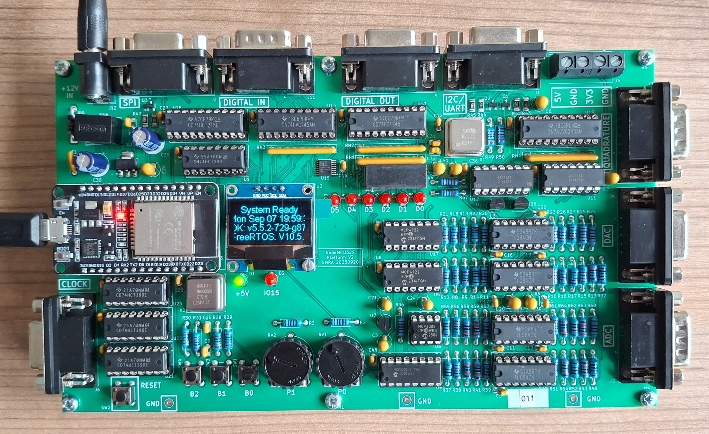

Inleiding
Welkom bij de workshop Realtime Software Engineering.
In deze workshop leer je hoe je realtime systemen ontwerpt en implementeert. Als basis wordt gebruikgemaakt van FreeRTOS, een realtime besturingssysteem voor microcontrollers. Je werkt met praktische opdrachten waarin je stap voor stap kennis opbouwt over:
basisprincipes van realtime software;
programmeren voor microcontrollers;
in- en output op microcontrollers;
bitbewerkingen en logica;
testen en simuleren van embedded software.
Bij de workshop wordt gebruikgemaakt van het NodeMCU-Shield, zoals weergegeven in de onderstaande afbeelding.

Figuur 1. NodeMCU-ShieldLet op
In de workshop wordt geprogrammeerd in de taal C, echter alle bibliotheek functies zijn geschreven in C++. Je kunt alle member-functies van een object aanroepen zoals je dat in C zou doen, echter de functie wordt voorafgegaan met een verwijzing naar het object gevolgd door een .(directe toegang) of een ->(bij pointers) operator. Hier is een voorbeeld:
Voorbeeld van directe toegang tot member-functies van een object in C++
dio_device dio;
dio.SetBit(0); // Zet de LED aan op basis van het ledNumber
dio.ClearBit(0); // Zet de LED uit op basis van het ledNumber
Voorbeeld van toegang tot member-functies van een object via een pointer in C++
dio_device *dio;
dio = new dio_device();
dio->SetBit(0); // Zet de LED aan op basis van het ledNumber
dio->ClearBit(0); // Zet de LED uit op basis van het ledNumber